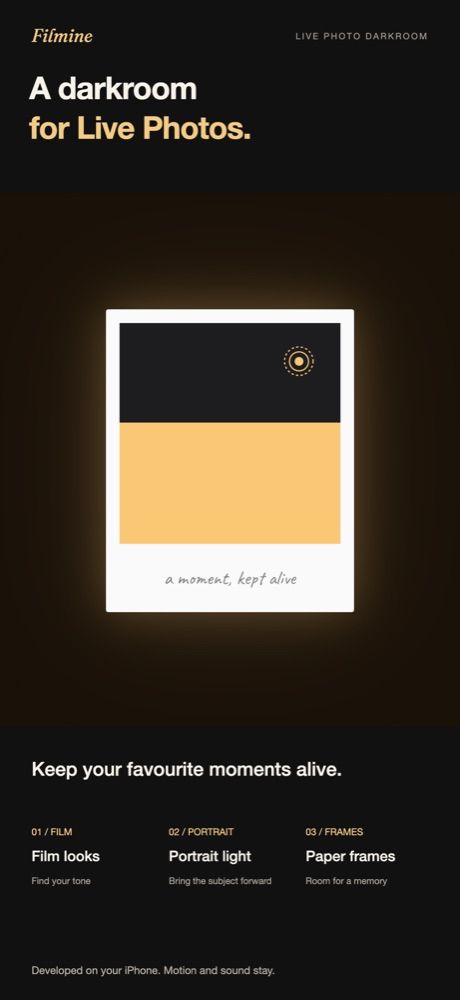
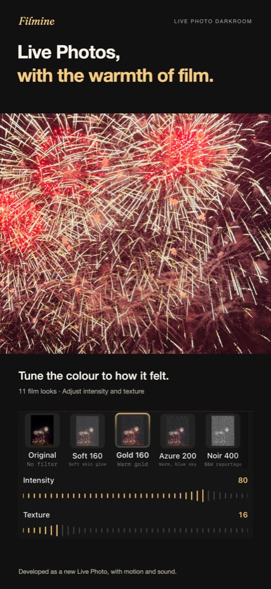
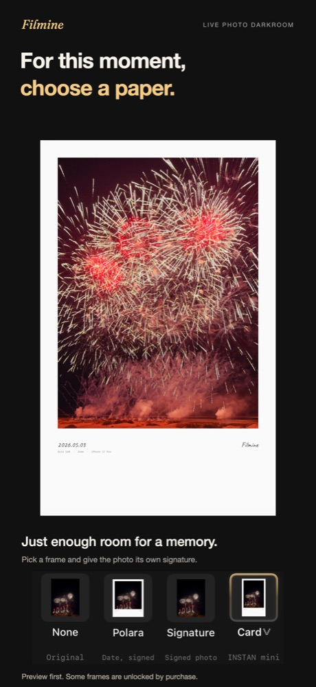

Press kit
One line: Filmine is a digital darkroom for Live Photos on iPhone — film looks, portrait light and paper frames, developed on the device and saved as a new Live Photo with motion and sound intact.
Everything on this page may be quoted or reproduced. For interviews, review builds or anything else, write to hello@filmine.app.
Boilerplate
Filmine is a digital darkroom for Live Photos. Choose a moment from Photos, shape its colour with one of eleven film looks, refine the portrait and add a paper frame. Unlike editors that flatten a Live Photo into a still, Filmine develops the still and every frame of the video with the same treatment, so the result still moves and sounds in Photos. Processing happens entirely on the iPhone: no account, no servers, no analytics. Film and portrait tools are free; eight of the ten paper frames unlock with a yearly plan or a one-time purchase. Filmine is made by an independent developer and is available on the App Store in English, Simplified and Traditional Chinese, Japanese and Korean.
Facts
| Name | Filmine — Live Photo Darkroom |
|---|---|
| Platform | iPhone only, iOS 18.0 or later. No iPad, Mac or Android version. |
| Price | Free download. Film and portrait tools free; three of ten frames free. Remaining eight frames: yearly subscription (free week for eligible new subscribers) or lifetime purchase. Prices are shown in the app and vary by storefront. |
| Input | Live Photos only. Ordinary stills, screenshots and videos do not appear in the picker. |
| Output | Always a new Live Photo (HEIC + MOV pair). The original is never modified or deleted. |
| Film | 11 film looks; two controls, intensity and texture. |
| Portrait | 5 presets (Subtle, Vivid, Soft, Fill Light, Selective) and two sliders (subject fill, background fade). Subject-based effects need a detected subject. |
| Frames | 10 papers plus the unframed original. Frames are “companion layers”: the paper is part of the picture and moves with the press-and-hold zoom. |
| Privacy | App Store privacy label: Data Not Collected. No accounts, servers, analytics or third-party SDKs. Policy. |
| Languages | English, 简体中文, 繁體中文, 日本語, 한국어 |
| Availability | App Store in 147 countries and regions. Not currently sold in the EU or mainland China. |
| Developer | Independent developer. First release: September 2026. |
| Links | App Store · filmine.app · hello@filmine.app |
Assets



Brand notes
{kind=link}
{kind=link}
{kind=link}
{kind=link}
{kind=link}
{kind=link}